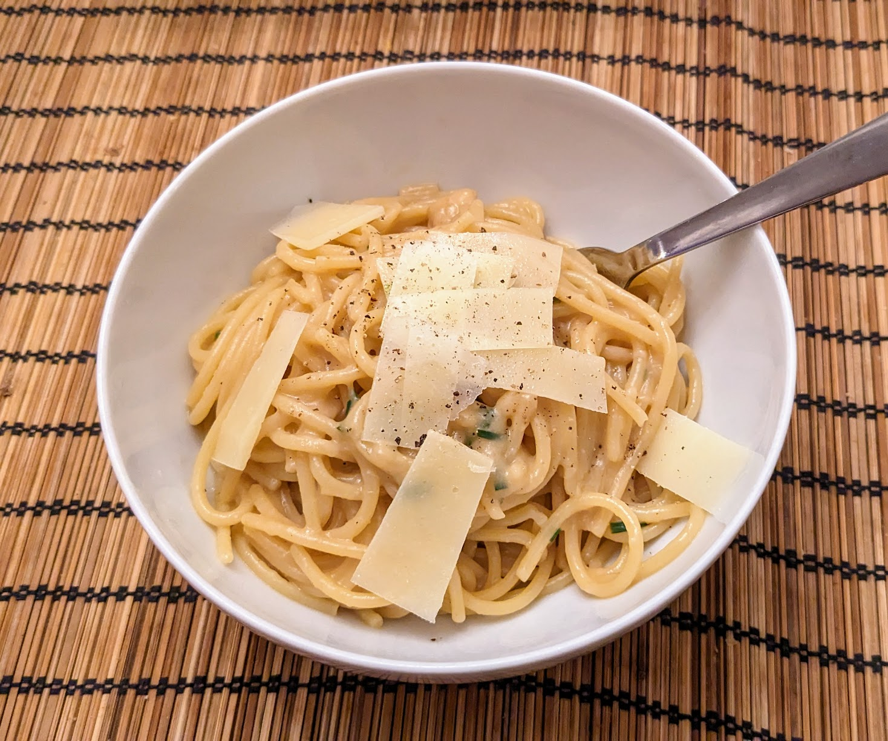

Pâtes à l'ail rôti

Pour 2 personnes :
- 250g de pâtes (des spaghetti, ça va super bien)
- Deux grosses têtes d'ail, plus deux gousses
- 30mL de crème
- Un petit citron, ou la moitié d'un gros
- 50mL de sauce soja
- Quelques brins de ciboulette, ou le vert d'un oignon frais
- Une pincée de piment
- Huile d'olive, sel, poivre
- Faire préchauffer un four à 200°C. Sans séparer les gousses, couper le sommet des têtes d'ail pour que chaque gousse soit légèrement coupée sur le dessus. Envelopper les têtes d'ail dans du papier alu de façon à peu près hermétique, et enfourner une heure.
- Sortir les têtes d'ail et vérifier qu'elles sont bien moelleuses. Lancer la cuisson des pâtes, et faire chauffer la crème au fond d'une casserole.
- Pendant ce temps, éplucher et presser les deux gousses d'ail crues, presser le citron pour récupérer environ 30mL de jus, récupérer les gousses d'ail rôties avec les doigts puis les écraser à la fourchette, laver puis émincer la ciboulette, et tout mélanger dans un bol avec la sauce soja et le piment. Saler un peu et poivrer généreusement.
- Lorsque les pâtes sont presques cuites, récupérer un verre d'eau de cuisson, les égoutter, puis finir de les cuire avec la sauce et le verre d'eau de cuisson. Servir dès qu'il n'y a plus de liquide au fond de la casserole, avec un peu de parmesan ou d'emmental râpé, et un peu plus de poivre.
Retour à la liste des recettes